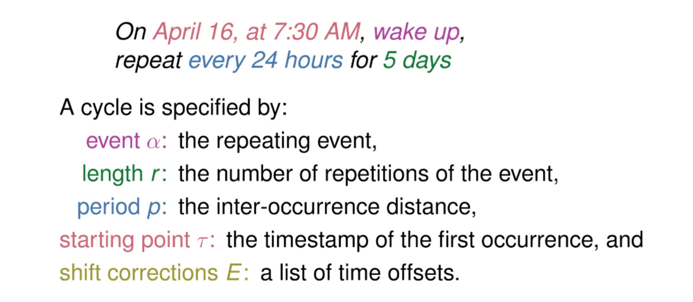
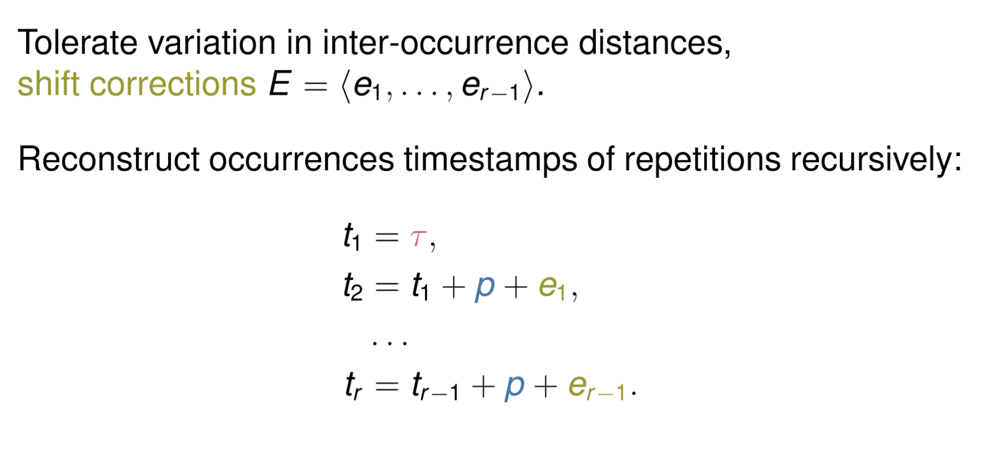

Periodic pattern mining on canadian TV logs¶

The problem, informally¶
Let’s take a simple example.
Imagine you set an alarm to wake up every day around 7:30AM, and go to work. Sometimes you wake up a bit earlier (your body anticipates on the alarm), and sometimes a bit later, for example if you press the “snooze” button and refuse to face the fact that you have to wake up.
In python we can load those “wake up” events as logs, and store them in a pandas.Series, like
[1]:
import datetime as dt
import pandas as pd
one_day = 60 * 24 # a day in minutes
minutes = [0, one_day - 1, one_day * 2, one_day * 3 + 1, one_day * 4, one_day * 7]
S = pd.Series("wake up", index=minutes)
start = dt.datetime.strptime("16/04/2020 07:30", "%d/%m/%Y %H:%M")
S.index = S.index.map(lambda e: start + dt.timedelta(minutes=e))
S.index = S.index.round("min") # minutes as the lowest unit of difference
S
[1]:
2020-04-16 07:30:00 wake up
2020-04-17 07:29:00 wake up
2020-04-18 07:30:00 wake up
2020-04-19 07:31:00 wake up
2020-04-20 07:30:00 wake up
2020-04-23 07:30:00 wake up
dtype: object
We can see the wake-up time is not exactly the same every day, but overall a consistent regular pattern seems to emerge.
Now imagine that in addition to wake up times, we also have records of other daily activities (meals, work, household chores, etc.), and that rather than a handful of days, those records span several years and make up several thousands of events
How would you be able to detect regularities in the data ?
Introduction to periodic pattern mining¶
Periodic pattern mining aims at exploiting regularities not only about what happens by finding coordinated event occurrences, but also about when it happens and how it happens, by finding consistent inter-occurrence timeintervals.
Next, we introduce the concept of cycles
The cycle : a building block for periodic pattern mining¶
Here is an explicit example of a cycle

This definition, while being relatively simple, is general enough to allow us to find regularities in different types of logs
Handling noise in our timestamps¶
Needless to say, it would be too easy if events in our data were equally spaced. As data often comes noisy, we have to be fault tolerant, and allow small errors to sneak into our cycles.
That’s the role of shift corrections, which capture the small deviations from perfectly regular periodic repetitions, and allow to reconstruct the (noisy) original sequence of events, using the following relation 
A tiny example with scikit-mine¶
scikit-mine offers a PeriodicCycleMiner, out of the box. You can use it to detect regularities, in the form of cycles, in the input data.
These regularities are submitted to an MDL criterion, so that we do not mistakenly include redundant occurences, nor forget to consider other intervals that would sumarize our data in a better way.
MDL offers a framework to find the best set of cycles, i.e the set that gives the most succint representation of the data. And as humans, we often like to deal with non-redundant, well organized data.
[2]:
from skmine.periodic import PeriodicCycleMiner
pcm = PeriodicCycleMiner().fit(S)
pcm.discover()
[2]:
| start | length | period | ||
|---|---|---|---|---|
| wake up | 0 | 2020-04-16 07:30:00 | 5 | 1 days |
You can see one cycle has been extracted for our event wake up. The cycle covers the entire business week, but not the last monday separated by the weekend
It has a length of 5 and a period close to 1 day, as expected.
Also, note that we “lost” some information here. Our period of 1 day offers the best summary for this data. Accessing the little “shifts” as encountered in original data is also possible, with an extra argument in our .discover call
[3]:
pcm.discover(shifts=True)
[3]:
| start | length | period | dE | ||
|---|---|---|---|---|---|
| wake up | 0 | 2020-04-16 07:30:00 | 5 | 1 days | [-6, 6, 6, -6] |
The last column named dE contains a list of shifts to apply to our cycle in case we want to reconstruct the original data. Trailing zeros have been removed for efficiency, but we can see there is: * a -60 second shift between the first and second entry (one minute early on tuesday) * a 60 second shift between the second and third entry (back to 7:30 on wednesday) * an 60 second shift between the third and fourth entry (one minute late on thursday) * an -60 second shift between the fourth
and fifth entry (back to 7:30 on friday)
Also note that we can get the “uncovered” events, called redisuals
[4]:
pcm.get_residuals()
[4]:
2020-04-23 07:30:00 wake up
dtype: object
This way pcm does not store all the data, but has all information needed to reconstruct it entirely !!
[5]:
pcm.reconstruct()
[5]:
2020-04-16 07:30:00 wake up
2020-04-17 07:29:00 wake up
2020-04-18 07:30:00 wake up
2020-04-19 07:31:00 wake up
2020-04-20 07:30:00 wake up
2020-04-23 07:30:00 wake up
dtype: object
An example with Canadian TV programs¶
Fetching logs from canadian TV¶
In this section we are going to load some event logs of TV programs (the WHAT), indexed by their broadcast timestamps (the WHEN).
PeriodicCycleMiner is here to help us discovering regularities (the HOW)
[6]:
from skmine.datasets import fetch_canadian_tv
from skmine.periodic import PeriodicCycleMiner
Searching for cycles in TV programs¶
Remember about the definition of cycles ? Let’s apply it to our TV programs
In our case
\(\alpha\) is the name of a TV program
\(r\) is the number of broadcasts (repetitions) for this TV program (inside this cycle)
\(p\) is the optimal time delta between broadcasts in this cycle. If a program is meant to be live everyday at 14:00PM, then \(p\) is likely to be
1 day\(\tau\) is the first broadcast time in this cycle
\(dE\) are the shift corrections between the \(p\) and the actual broadcast time of an event. If a TV program was scheduled at 8:30:00AM and it went on air at 8:30:23AM the same day, then we keep track of a
23 seconds shift. This way we can summarize our data (via cycles), and reconstruct it (via shift corrections).
Finally we are going to dig a little deeper into these cycles, to answer quite complex questions about our logs. We will see that cycles contains usefull information about our input data
[7]:
ctv_logs = fetch_canadian_tv()
ctv_logs.head()
[7]:
timestamp
2020-08-01 06:00:00 The Moblees
2020-08-01 06:11:00 Big Block Sing Song
2020-08-01 06:13:00 Big Block Sing Song
2020-08-01 06:15:00 CBC Kids
2020-08-01 06:15:00 CBC Kids
Name: canadian_tv, dtype: string
[8]:
pcm = PeriodicCycleMiner()
pcm.fit(ctv_logs)
/home/radon/miniconda3/envs/skmine/lib/python3.6/site-packages/scikit_mine-0.0.5-py3.6.egg/skmine/periodic/cycles.py:414: UserWarning: found duplicates in input sequence, removing them
warnings.warn("found duplicates in input sequence, removing them")
[8]:
<skmine.periodic.cycles.PeriodicCycleMiner at 0x7fed4883f048>
Note : no need to worry for the warning, it’s here to notify duplicate event/timestamp pairs have been found
[9]:
cycles = pcm.discover()
cycles
[9]:
| start | length | period | ||
|---|---|---|---|---|
| Addison | 0 | 2020-08-03 07:11:00 | 5 | 1 days 00:00:00 |
| 1 | 2020-08-10 07:11:00 | 5 | 1 days 00:00:00 | |
| 2 | 2020-08-17 07:11:00 | 5 | 1 days 00:00:00 | |
| 3 | 2020-08-24 07:11:00 | 5 | 1 days 00:00:00 | |
| Arthur Shorts | 0 | 2020-08-17 09:48:00 | 5 | 1 days 00:00:00 |
| ... | ... | ... | ... | ... |
| This Hour Has 22 Minutes | 2 | 2020-08-11 00:30:00 | 7 | 0 days 00:30:00 |
| 3 | 2020-08-25 02:00:00 | 4 | 0 days 00:30:00 | |
| 4 | 2020-08-12 19:00:00 | 4 | 1 days 00:00:00 | |
| Thrillusionists | 0 | 2020-08-02 07:36:00 | 5 | 7 days 00:00:00 |
| Vet on the Hill | 0 | 2020-08-03 16:00:00 | 5 | 1 days 00:00:00 |
86 rows × 3 columns
The resulting dataframe has a MultIndex.
The first level is the event name, the second level corresponds to the cycle number, as we can detect multiple cycles for the same event
Now that we have our cycles in a pandas.DataFrame, we can play with the pandas API and answer questions about our logs
Did I find cycles for the TV show “Arthurt Shorts”¶
[10]:
cycles.loc["Arthur Shorts"]
[10]:
| start | length | period | |
|---|---|---|---|
| 0 | 2020-08-17 09:48:00 | 5 | 1 days 00:00:00 |
| 1 | 2020-08-24 09:48:00 | 5 | 0 days 23:59:30 |
| 2 | 2020-08-04 09:48:00 | 4 | 1 days 00:00:00 |
| 3 | 2020-08-12 09:47:00 | 3 | 1 days 00:00:30 |
What are the top 10 longest cycles ?¶
[11]:
cycles.nlargest(10, ["length"])
[11]:
| start | length | period | ||
|---|---|---|---|---|
| Grand Designs | 0 | 2020-08-01 05:00:00 | 31 | 1 days 00:00:00 |
| Schitt's Creek | 0 | 2020-08-28 00:00:00 | 8 | 0 days 00:30:00 |
| Kim's Convenience | 0 | 2020-08-05 00:30:00 | 7 | 0 days 00:30:00 |
| 1 | 2020-08-26 00:30:00 | 7 | 0 days 00:30:00 | |
| Mr. D | 0 | 2020-08-06 00:30:00 | 7 | 0 days 00:30:00 |
| Schitt's Creek | 1 | 2020-08-07 00:30:00 | 7 | 0 days 00:30:00 |
| This Hour Has 22 Minutes | 0 | 2020-08-18 00:30:00 | 7 | 0 days 00:30:00 |
| 1 | 2020-08-04 00:30:00 | 7 | 0 days 00:30:00 | |
| 2 | 2020-08-11 00:30:00 | 7 | 0 days 00:30:00 | |
| Addison | 0 | 2020-08-03 07:11:00 | 5 | 1 days 00:00:00 |
what are the 10 most unpunctual TV programs ?¶
For this we are going to : 1. extract the shift corrections along with other informations about our cycles 2. compute the sum of the absolute values for the shift corrections, for every cycles 3. get the 10 biggest sums
[12]:
full_cycles = pcm.discover(shifts=True)
full_cycles.head()
[12]:
| start | length | period | dE | ||
|---|---|---|---|---|---|
| Addison | 0 | 2020-08-03 07:11:00 | 5 | 1 days | [0, 0, 0, 0] |
| 1 | 2020-08-10 07:11:00 | 5 | 1 days | [0, 0, 0, 0] | |
| 2 | 2020-08-17 07:11:00 | 5 | 1 days | [0, 0, 0, 0] | |
| 3 | 2020-08-24 07:11:00 | 5 | 1 days | [0, 0, 0, 0] | |
| Arthur Shorts | 0 | 2020-08-17 09:48:00 | 5 | 1 days | [0, 0, 0, 0] |
[13]:
def absolute_sum(*args):
return sum(map(abs, *args))
# level 0 is the name of the TV program
shift_sums = full_cycles["dE"].map(absolute_sum).groupby(level=[0]).sum()
shift_sums.nlargest(10)
[13]:
Rusty Rivets 120
Arthur Shorts 48
Kiri & Lou 24
Daniel Tiger's Neighbourhood 18
PJ Masks 18
Daisy & The Gumboot Kids 12
Holy Baloney 12
Thrillusionists 12
Ollie: The Boy Who Became What He Ate 6
The Strange Chores 6
Name: dE, dtype: int64
What TV programs have been broadcasted every day for at least 5 days straight?¶
Let’s make use of the pandas.DataFrame.query method to express our question in an SQL-like syntax
[14]:
cycles.query('length >= 5 and period >= "1 days"', engine='python')
[14]:
| start | length | period | ||
|---|---|---|---|---|
| Addison | 0 | 2020-08-03 07:11:00 | 5 | 1 days |
| 1 | 2020-08-10 07:11:00 | 5 | 1 days | |
| 2 | 2020-08-17 07:11:00 | 5 | 1 days | |
| 3 | 2020-08-24 07:11:00 | 5 | 1 days | |
| Arthur Shorts | 0 | 2020-08-17 09:48:00 | 5 | 1 days |
| Beat Bugs | 0 | 2020-08-03 07:30:00 | 5 | 1 days |
| 1 | 2020-08-10 07:30:00 | 5 | 1 days | |
| 2 | 2020-08-17 07:30:00 | 5 | 1 days | |
| 3 | 2020-08-24 07:30:00 | 5 | 1 days | |
| Big Block Sing Song | 0 | 2020-08-03 07:25:00 | 5 | 1 days |
| CBC News Network | 0 | 2020-08-10 12:00:00 | 5 | 1 days |
| 1 | 2020-08-17 12:00:00 | 5 | 1 days | |
| 2 | 2020-08-24 12:00:00 | 5 | 1 days | |
| Coronation Street Omnibus | 0 | 2020-08-02 08:57:00 | 5 | 7 days |
| Daisy & The Gumboot Kids | 0 | 2020-08-01 07:40:00 | 5 | 7 days |
| Does It Fart? | 0 | 2020-08-02 07:30:00 | 5 | 7 days |
| Dragons' Den | 0 | 2020-08-03 11:00:00 | 5 | 1 days |
| 1 | 2020-08-10 11:00:00 | 5 | 1 days | |
| 2 | 2020-08-17 11:00:00 | 5 | 1 days | |
| 3 | 2020-08-24 11:00:00 | 5 | 1 days | |
| Escape to the Country | 0 | 2020-08-03 15:00:00 | 5 | 1 days |
| Grand Designs | 0 | 2020-08-01 05:00:00 | 31 | 1 days |
| Heartland | 0 | 2020-08-03 14:00:00 | 5 | 1 days |
| Holy Baloney | 0 | 2020-08-02 07:34:00 | 5 | 7 days |
| Just For Laughs: Gags | 0 | 2020-08-03 19:30:00 | 5 | 1 days |
| Murdoch Mysteries | 0 | 2020-08-03 13:00:00 | 5 | 1 days |
| Ollie: The Boy Who Became What He Ate | 0 | 2020-08-10 08:59:00 | 5 | 1 days |
| Rusty Rivets | 0 | 2020-08-17 08:44:00 | 5 | 1 days |
| The Strange Chores | 0 | 2020-08-01 11:48:00 | 5 | 7 days |
| The Sunday Scrum | 0 | 2020-08-02 11:00:00 | 5 | 7 days |
| Thrillusionists | 0 | 2020-08-02 07:36:00 | 5 | 7 days |
| Vet on the Hill | 0 | 2020-08-03 16:00:00 | 5 | 1 days |
What TV programs are broadcast only on business days ?¶
From the previous query we see we have a lot of 5-length cycles, with periods of 1 day. An intuition is that these cycles take place on business days. Let’s confirm this by considering cycles with 1. start timestamps on mondays 2. periods of roughly 1 day
[15]:
monday_starts = cycles[cycles.start.dt.weekday == 0] # start on monday
monday_starts.query('length == 5 and period >= "1 days"', engine='python')
[15]:
| start | length | period | ||
|---|---|---|---|---|
| Addison | 0 | 2020-08-03 07:11:00 | 5 | 1 days |
| 1 | 2020-08-10 07:11:00 | 5 | 1 days | |
| 2 | 2020-08-17 07:11:00 | 5 | 1 days | |
| 3 | 2020-08-24 07:11:00 | 5 | 1 days | |
| Arthur Shorts | 0 | 2020-08-17 09:48:00 | 5 | 1 days |
| Beat Bugs | 0 | 2020-08-03 07:30:00 | 5 | 1 days |
| 1 | 2020-08-10 07:30:00 | 5 | 1 days | |
| 2 | 2020-08-17 07:30:00 | 5 | 1 days | |
| 3 | 2020-08-24 07:30:00 | 5 | 1 days | |
| Big Block Sing Song | 0 | 2020-08-03 07:25:00 | 5 | 1 days |
| CBC News Network | 0 | 2020-08-10 12:00:00 | 5 | 1 days |
| 1 | 2020-08-17 12:00:00 | 5 | 1 days | |
| 2 | 2020-08-24 12:00:00 | 5 | 1 days | |
| Dragons' Den | 0 | 2020-08-03 11:00:00 | 5 | 1 days |
| 1 | 2020-08-10 11:00:00 | 5 | 1 days | |
| 2 | 2020-08-17 11:00:00 | 5 | 1 days | |
| 3 | 2020-08-24 11:00:00 | 5 | 1 days | |
| Escape to the Country | 0 | 2020-08-03 15:00:00 | 5 | 1 days |
| Heartland | 0 | 2020-08-03 14:00:00 | 5 | 1 days |
| Just For Laughs: Gags | 0 | 2020-08-03 19:30:00 | 5 | 1 days |
| Murdoch Mysteries | 0 | 2020-08-03 13:00:00 | 5 | 1 days |
| Ollie: The Boy Who Became What He Ate | 0 | 2020-08-10 08:59:00 | 5 | 1 days |
| Rusty Rivets | 0 | 2020-08-17 08:44:00 | 5 | 1 days |
| Vet on the Hill | 0 | 2020-08-03 16:00:00 | 5 | 1 days |
References¶
Galbrun, E & Cellier, P & Tatti, N & Termier, A & Crémilleux, B “Mining Periodic Pattern with a MDL Criterion”
Galbrun, E “The Minimum Description Length Principle for Pattern Mining : A survey”
Termier, A “Periodic pattern mining”